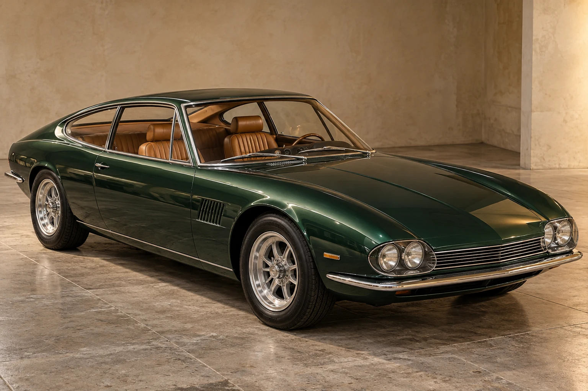

ARCHIVIO N° 01 / 1940—1979
Rara.
Per scelta.
Quaranta visioni dell’automobile.
Esemplari unici e piccole serie d’atelier.

Il lusso di non ripetersi.
PROGETTI ORIGINALI · UNIVERSO IMMAGINARIOQUATTRO DECENNI DI ATELIER
Quaranta forme
di eccezione.
Dalla barchetta alla limousine, fino a nove concept car. Quaranta interpretazioni dell’eleganza europea, ognuna con una meccanica e una personalità propria.
LA FILOSOFIA SHERYL
Prima il disegno.
Poi il metallo.
Infine, la strada.
Immaginiamo un atelier nato nel 1940, dove progettisti, motoristi e battilastra lavorano intorno allo stesso tavolo. Produzione artigianale: concept car, esemplari unici e piccolissime serie di fascia alta e altissima.
La carrozzeria viene modellata a mano. L’abitacolo riceve pellami, legni e strumenti scelti per quel singolo progetto. Il motore dà voce alla sua personalità.
ANATOMIA DI UN’IDEA
L’archivio,
in numeri.
Architetture differenti per quaranta caratteri distinti. Dati progettuali immaginari, formulati con attenzione alle possibilità tecniche dell’epoca.
Scorri la tabella per confrontare i modelli selezionati →
Potenza in CV metrici. Velocità massime e coppie sono stime narrative di progetto, non risultati di prove o omologazioni.
I prezzi sono immaginari e riferiti all’anno di ciascun modello; per le concept indicano il costo narrativo di realizzazione, mentre per le serie limitate si riferiscono a un singolo esemplare. Gli euro tra parentesi sono una conversione nominale al tasso di 1 € = 1.936,27 lire, senza rivalutazione per inflazione: non rappresentano il valore economico attuale. Tasso ufficiale · Banca d’Italia ↗